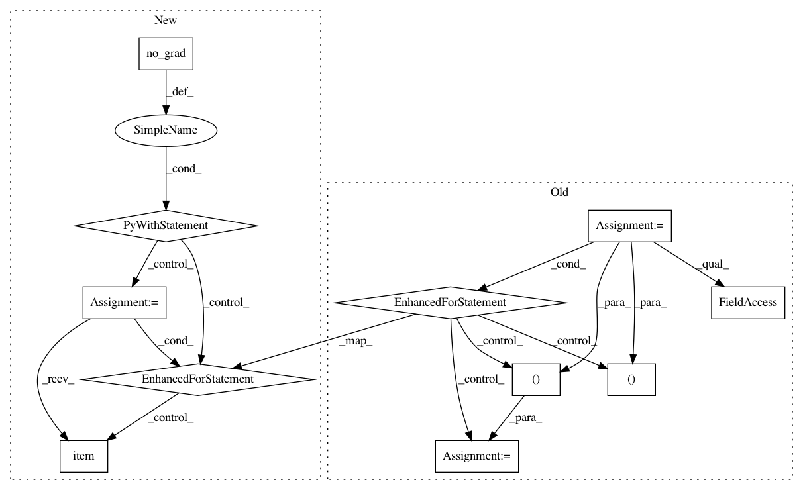

4441480fde64e42a9c4af205bf2ab8003511172e,test.py,,kNN,#Any#Any#Any#Any#Any#Any#Any#Any#,69
Before Change
top1 = 0.
top5 = 0.
end = time.time()
for batch_idx, (inputs, targets, indexes) in enumerate(testloader):
inputs, targets = inputs.cuda(), targets.cuda()
inputs, targets = Variable(inputs, volatile=True), Variable(targets)
batchSize = inputs.size(0)
features = net(inputs)
net_time.update(time.time() - end)
end = time.time()
dist = torch.mm(features.data, trainFeatures)
yd, yi = dist.topk(K, dim=1, largest=True, sorted=True)
candidates = trainLabels.view(1,-1).expand(batchSize, -1)
retrieval = torch.gather(candidates, 1, yi)
retrieval_one_hot = torch.FloatTensor(batchSize * K, C).zero_().cuda()
retrieval_one_hot.scatter_(1, retrieval.view(-1, 1), 1)
yd_transform = yd.clone().div_(sigma).exp_()
probs = torch.sum(torch.mul(retrieval_one_hot.view(batchSize, -1 , C), yd_transform.view(batchSize, -1, 1)), 1)
_, predictions = probs.sort(1, True)
// Find which predictions match the target
correct = predictions.eq(targets.data.view(-1,1))
top1 = top1 + correct.narrow(1,0,1).sum()
top5 = top5 + correct.narrow(1,0,5).sum()
total += targets.size(0)
cls_time.update(time.time() - end)
end = time.time()
print("Test [{}/{}]\t"
"Net Time {net_time.val:.3f} ({net_time.avg:.3f})\t"
"Cls Time {cls_time.val:.3f} ({cls_time.avg:.3f})\t"
"Top1: {:.2f} Top5: {:.2f}".format(
total, testsize, top1*100./total, top5*100./total, net_time=net_time, cls_time=cls_time))
print(top1*100./total)
return top1/total
After Change
top1 = 0.
top5 = 0.
end = time.time()
with torch.no_grad():
for batch_idx, (inputs, targets, indexes) in enumerate(testloader):
inputs, targets = inputs.to(device), targets.to(device)
batchSize = inputs.size(0)
features = net(inputs)
net_time.update(time.time() - end)
end = time.time()
dist = torch.mm(features, trainFeatures)
yd, yi = dist.topk(K, dim=1, largest=True, sorted=True)
candidates = trainLabels.view(1,-1).expand(batchSize, -1)
retrieval = torch.gather(candidates, 1, yi)
retrieval_one_hot = torch.zeros(batchSize * K, C, device=device)
retrieval_one_hot.scatter_(1, retrieval.view(-1, 1), 1)
yd_transform = yd.clone().div_(sigma).exp_()
probs = torch.sum(torch.mul(retrieval_one_hot.view(batchSize, -1 , C), yd_transform.view(batchSize, -1, 1)), 1)
_, predictions = probs.sort(1, True)
// Find which predictions match the target
correct = predictions.eq(targets.data.view(-1,1))
top1 = top1 + correct.narrow(1,0,1).sum().item()
top5 = top5 + correct.narrow(1,0,5).sum().item()
total += targets.size(0)
cls_time.update(time.time() - end)
end = time.time()
print("Test [{}/{}]\t"
"Net Time {net_time.val:.3f} ({net_time.avg:.3f})\t"
"Cls Time {cls_time.val:.3f} ({cls_time.avg:.3f})\t"
"Top1: {:.2f} Top5: {:.2f}".format(
total, testsize, top1*100./total, top5*100./total, net_time=net_time, cls_time=cls_time))
print(top1*100./total)
return top1/total
In pattern: SUPERPATTERN
Frequency: 3
Non-data size: 11
Instances
Project Name: zhirongw/lemniscate.pytorch
Commit Name: 4441480fde64e42a9c4af205bf2ab8003511172e
Time: 2018-07-26
Author: xavibrowu@gmail.com
File Name: test.py
Class Name:
Method Name: kNN
Project Name: pytorch/examples
Commit Name: 645c7c386e62d2fb1d50f4621c1a52645a13869f
Time: 2018-04-24
Author: soumith@gmail.com
File Name: mnist_hogwild/train.py
Class Name:
Method Name: test_epoch
Project Name: zhirongw/lemniscate.pytorch
Commit Name: 4441480fde64e42a9c4af205bf2ab8003511172e
Time: 2018-07-26
Author: xavibrowu@gmail.com
File Name: test.py
Class Name:
Method Name: NN